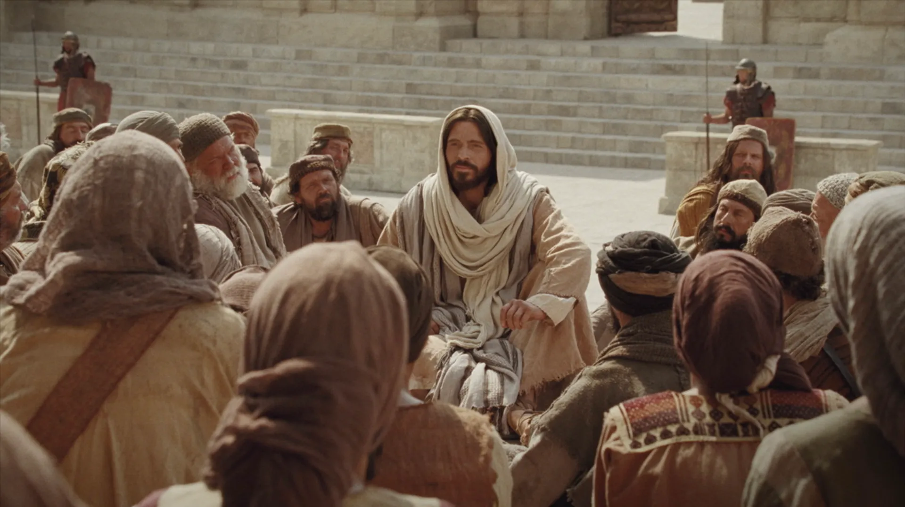

About Me
Hello! My name is Charlotte and I began my coding journey in 2022, starting frontend development projects to refine my skills. My commitment to creating better software technology has been unwavering. I bring not just technical prowess but also problem-solving finesse and design sensibilities to the table. From breathing life into websites to optimizing user interactions, I approach every project with zest and a dedication to excellence. Join me in navigating the dynamic realm where technology meets creativity. Let's transform concepts into seamless digital experiences!
Church of Jesus Christ
Jesus Christ plays a central role in our beliefs and in our lives. Our mission is to invite all of God’s children to follow Jesus and experience the joy that is possible because of Him.
